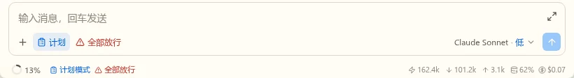
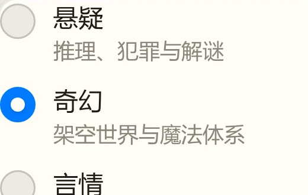
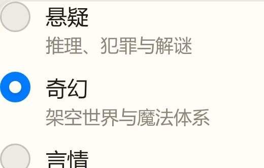

t38 第 1 轮：状态栏设置的后续
“计划模式”“全部放行”这两个标记要不要能关？
推荐 A：这两个标记改成可选项，缺省开着，右键菜单与设置页都能关。“等你批准”“断线”这类正在发生、要你处理的提醒照旧关不掉。
现在关不掉，是因为 t29 第 1 轮定了“提醒类总显示”，那一轮的推荐没写理由。当时我把模式标记和“等你批准”“断线”归成了一类。可模式是你自己选的、一直持续的状态，输入框工具栏上本来就有，“全部放行”在那里还是红色，状态栏这两个标记等于再显示一遍：

A 改成可选项，缺省开
目录里多两项：“Agent 模式”（不是普通模式时显示）、“全部放行警告”。关掉以后，只剩工具栏上那个。
B 状态栏不再显示
两个标记从状态栏拿掉，只看工具栏。窄屏时工具栏上的模式只剩图标，“全部放行”的红色还在。
C 保持总显示
不改。
拖动用哪一种实时布局？
推荐 A 行跟手：列表短，只在竖直方向排，拿起的那一行本身就是落下后的样子，用不着另一张卡片。工作台标签条里排序也是这种手感。
两个原型都能直接拖，也能拖到另一组；松手后上面的预览才变，拖动中按 Esc 回原样。两种的判定相同，同标签条：往下拖时，被拖的行下沿过了下一行的中线，下一行就让上来；往上同理。另一组的标题也算一行，过了它就进了那一组。都不再画落点线。
A 行跟手
被拖的行只上下动，夹在两组之间；邻居实时让开。
B 卡片跟手，列表留空位
行拿起成卡片，跟着指针随便走；列表里在要落下的地方留出空位，什么都不画，松手时卡片落进空位。工作台把视图拖出标签条是这种。
两种都一样的：改用指针手势（现在用的是浏览器原生拖放，它只能画浏览器自己的半透明拖影，做不了实时布局，也不支持触摸）；键盘在行上按空格拿起，上下键挪（可以跨组），回车放下，Esc 取消；上移下移按钮保留，也能跨组：右边第一项按上移，到左边最后。
项可以换边以后，状态栏窄了先收哪些？
推荐 A：先收右边（从前往后，同现在）；右边收完还放不下，再收左边的数据项（从后往前，离提醒最近的先收），都收进右边同一个“…”。提醒不收，最后才截断。
现在左边只有上下文圆环与插件的项，窄了直接截断；能换边以后，左边可能放了用量、费用，窄的时候会把“等你批准”“断线”这些提醒挤出去。插件声明的一边改成缺省的一边。下面的例子：用户把“用量”拖到了左边，此刻在等批准。
A 左右都收，提醒最后
收起的项悬停“…”看。
B 左边不收，只截断（现状）
最简单；窄了提醒先被截掉。
C 提醒排在左边最前
左边不收；提醒一出现，圆环就往右挪。
拖动排序做成 composable 还是组件？
推荐 A：核心是 composable，竖排的分组列表再包一个薄组件，设置页用组件。手势复用 nb-layout 现有的拖动会话，与工作台同一套门槛、取消与键盘。
现在设置页的拖动是页面里手写的原生拖放，上面几个问题（不能跨组、只有落点线、没有键盘）都出在这里。拆出来以后只写一次、各处一个手感。
A composable 加薄组件
useSortable：手势（起拖门槛、指针捕获、Esc 与失焦取消、键盘拿起）用 nb-layout 的拖动会话；判定、跨组、让位动画、读屏播报在这里。SortableList：分几组的竖排列表，每行用插槽画；只负责摆放与把属性接到行上。- 横排、网格这类形状直接用 composable。
B 只做 composable
- 只有
useSortable，每个用的地方自己画列表、接属性、写让位的样式。 - 用的地方多了，每处都要接对同样几样东西。
C 只做组件
- 只有
SortableList，逻辑都在组件里。 - 竖排列表最省事；横排、网格要另写一份。
放在 nb-layout 的 Vue 层：拖动手势与判定在那里，nb-ui 不能反过来依赖 nb-layout。以后表单里的对象列表（现在只有上移下移按钮）也能接上。
直接修，不用答
| 哪里 | 改成什么 |
|---|---|
| 单选组的圆点比文字低约 1.5 像素（nb-ui 的单选组，所有设置页都有） | 圆点放进与第一行同高的盒子里居中。左边是现在，右边是草稿里改过的（放大 3 倍）：
  |
| 状态栏设置页每一行的把手、上移下移按钮，对的是两行字的中间 | 对齐标题那一行（上面原型里已经是改后的样子） |
| 拖动时行上下沿的蓝线 | 删掉，由实时布局代替 |
已定
- 右键勾选显隐，设置页分左右两组排序，用量四项合成一项（t29 第 1 轮）
- 排序用拖动加上移下移（t37）
- 这一版不做缓存倒计时（t37）